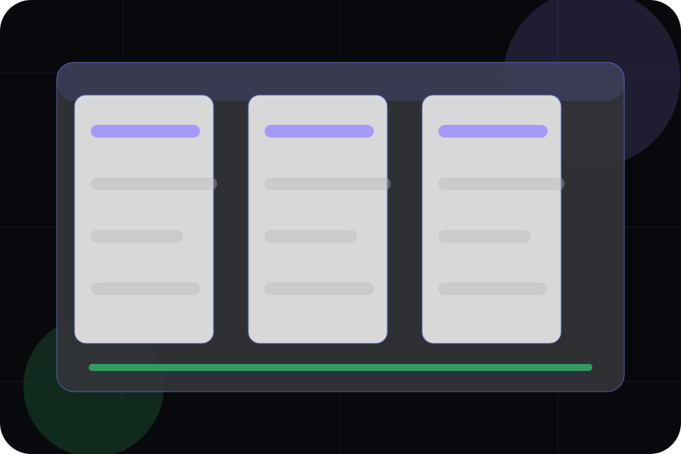
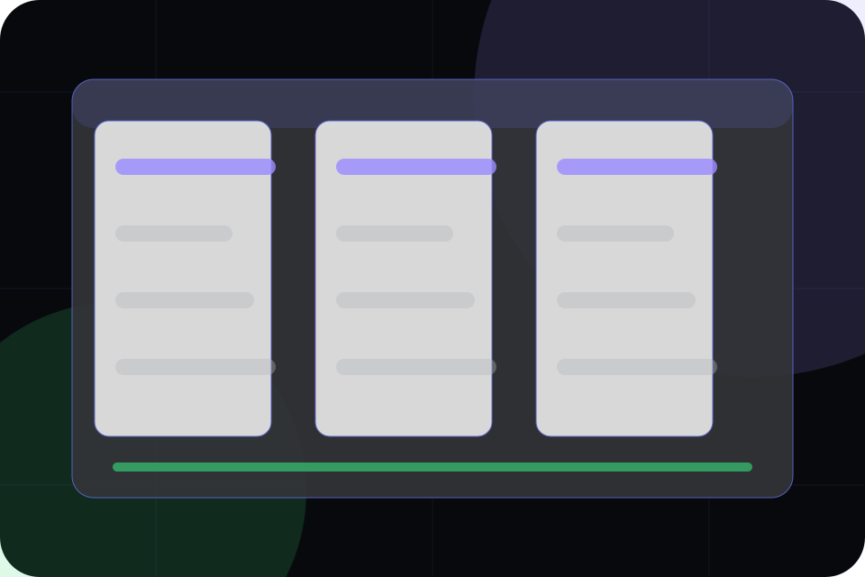

Details
What information helps Orbit respond with a useful answer instead of a generic reply.
Contact / 01
Contact opens as a clear software decision hub: what Orbit offers, who it helps, why it matters, and which route to take first.
The first screen combines positioning, proof, primary action, and fast internal navigation, so people can act immediately or compare the rest of the contact route with context.
App interface hero
Select the closest route and Orbit keeps the next step, proof, and follow-up expectation aligned with speed, clarity, and product confidence.

Contact / 02
Sales makes the contact path concrete: what to send, how the response works, and what Orbit needs before visitors schedule a demo.
The section reduces contact friction by naming the channel, expected detail, privacy path, and response expectation instead of dropping visitors into a generic form.
Schedule DemoWhat information helps Orbit respond with a useful answer instead of a generic reply.
How the visitor should think about response, urgency, location, or availability.
The expected next message keeps scope, timing, and the first practical step clear.
Contact / 03
Demo makes the contact path concrete: what to send, how the response works, and what Orbit needs before visitors schedule a demo.
The section reduces contact friction by naming the channel, expected detail, privacy path, and response expectation instead of dropping visitors into a generic form.
Schedule DemoWhat information helps Orbit respond with a useful answer instead of a generic reply.
How the visitor should think about response, urgency, location, or availability.
The expected next message keeps scope, timing, and the first practical step clear.
Contact / 04
Support explains the practical scope, best-fit situations, and expected outcome so software visitors can compare options without decoding jargon.
The section keeps the offer concrete: what is included, who it is best for, what decision it supports, and which linked route gives the deeper detail.
Open ContactWho should use support and when it belongs in the contact journey.
The practical benefit visitors should expect after choosing this route.
Where to compare details, pricing, support, or contact options before committing.
Contact / 05
Partners gives the proof layer for contact: standards, evidence, and reassurance that make the next decision feel grounded.
Instead of relying on vague claims, Orbit presents visible standards, process cues, and proof artifacts that help software visitors judge fit.
Schedule DemoVisible proof that helps visitors believe the claims behind partners.
The quality, safety, or operating expectation this section makes explicit.
What becomes clearer before someone decides whether to schedule a demo.
Contact / 06
Form makes the contact path concrete: what to send, how the response works, and what Orbit needs before visitors schedule a demo.
The section reduces contact friction by naming the channel, expected detail, privacy path, and response expectation instead of dropping visitors into a generic form.
Schedule DemoOrbit keeps form practical: send the key details, choose the right contact route, and know what kind of reply to expect.
Schedule Demo
Contact / 07
Office makes the contact path concrete: what to send, how the response works, and what Orbit needs before visitors schedule a demo.
The section reduces contact friction by naming the channel, expected detail, privacy path, and response expectation instead of dropping visitors into a generic form.
Schedule DemoWhat information helps Orbit respond with a useful answer instead of a generic reply.
How the visitor should think about response, urgency, location, or availability.
The expected next message keeps scope, timing, and the first practical step clear.
Contact / 08
Response makes the contact path concrete: what to send, how the response works, and what Orbit needs before visitors schedule a demo.
The section reduces contact friction by naming the channel, expected detail, privacy path, and response expectation instead of dropping visitors into a generic form.
Schedule DemoWhat information helps Orbit respond with a useful answer instead of a generic reply.
Contact / 09
Trust gives the proof layer for contact: standards, evidence, and reassurance that make the next decision feel grounded.
Instead of relying on vague claims, Orbit presents visible standards, process cues, and proof artifacts that help software visitors judge fit.
Schedule DemoVisible proof that helps visitors believe the claims behind trust.
The quality, safety, or operating expectation this section makes explicit.
What becomes clearer before someone decides whether to schedule a demo.
Contact / 10
Orbit closes the contact route with a clear action, a quick reminder of the value, and a low-friction way to schedule a demo.
Visitors who are ready can use the primary action. Visitors who are still comparing can scan the section links, proof, and support routes before they schedule a demo.
Schedule DemoThe final block keeps the choice simple: act now, compare one more proof route, or send enough detail for a focused response.
Schedule Demospeed, clarity, and product confidence
A product-led SaaS site with a dark dashboard hero, precise modules, issue-like cards, and calm product copy. Contact ends with a direct path to schedule a demo, plus enough context for visitors who still need to compare.
Information is provided for planning and should be reviewed for the final client, location, and operating rules.